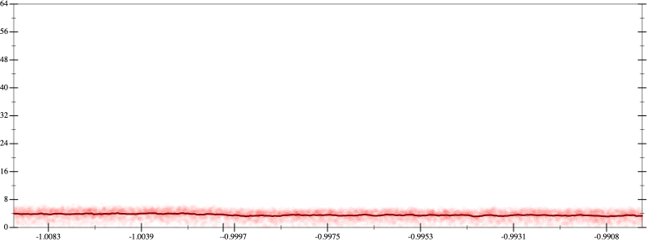
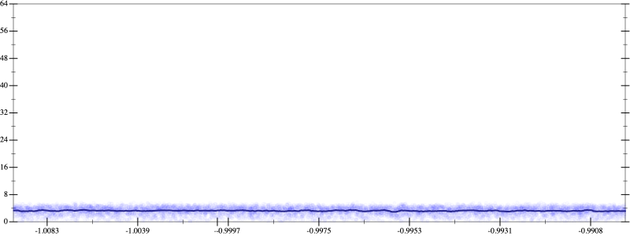
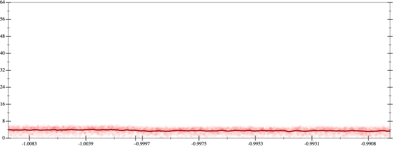
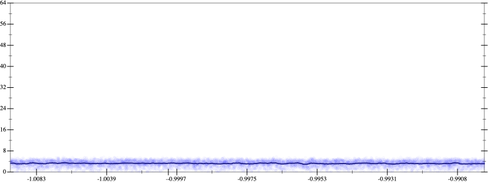

Initial program 3.6
\[\left(\left(\left(\left(\left(\left(\left(\left(-17643225600.0 + 317578060800.0 \cdot \left(x \cdot x\right)\right) + -846874828800.0 \cdot \left(\left(\left(x \cdot x\right) \cdot x\right) \cdot x\right)\right) + 790416506880.0 \cdot \left(\left(\left(\left(\left(x \cdot x\right) \cdot x\right) \cdot x\right) \cdot x\right) \cdot x\right)\right) + -338749931520.0 \cdot \left(\left(\left(\left(\left(\left(\left(x \cdot x\right) \cdot x\right) \cdot x\right) \cdot x\right) \cdot x\right) \cdot x\right) \cdot x\right)\right) + 75277762560.0 \cdot \left(\left(\left(\left(\left(\left(\left(\left(\left(x \cdot x\right) \cdot x\right) \cdot x\right) \cdot x\right) \cdot x\right) \cdot x\right) \cdot x\right) \cdot x\right) \cdot x\right)\right) + -9124577280.0 \cdot \left(\left(\left(\left(\left(\left(\left(\left(\left(\left(\left(x \cdot x\right) \cdot x\right) \cdot x\right) \cdot x\right) \cdot x\right) \cdot x\right) \cdot x\right) \cdot x\right) \cdot x\right) \cdot x\right) \cdot x\right)\right) + 601620480.0 \cdot \left(\left(\left(\left(\left(\left(\left(\left(\left(\left(\left(\left(\left(x \cdot x\right) \cdot x\right) \cdot x\right) \cdot x\right) \cdot x\right) \cdot x\right) \cdot x\right) \cdot x\right) \cdot x\right) \cdot x\right) \cdot x\right) \cdot x\right) \cdot x\right)\right) + -20054016.0 \cdot \left(\left(\left(\left(\left(\left(\left(\left(\left(\left(\left(\left(\left(\left(\left(x \cdot x\right) \cdot x\right) \cdot x\right) \cdot x\right) \cdot x\right) \cdot x\right) \cdot x\right) \cdot x\right) \cdot x\right) \cdot x\right) \cdot x\right) \cdot x\right) \cdot x\right) \cdot x\right) \cdot x\right)\right) + 262144.0 \cdot \left(\left(\left(\left(\left(\left(\left(\left(\left(\left(\left(\left(\left(\left(\left(\left(\left(x \cdot x\right) \cdot x\right) \cdot x\right) \cdot x\right) \cdot x\right) \cdot x\right) \cdot x\right) \cdot x\right) \cdot x\right) \cdot x\right) \cdot x\right) \cdot x\right) \cdot x\right) \cdot x\right) \cdot x\right) \cdot x\right) \cdot x\right)\]
Applied simplify3.4
\[\leadsto \color{blue}{\left(\left(\left(\left(\left(x \cdot x\right) \cdot \left(x \cdot x\right)\right) \cdot \left(\left(\left(x \cdot x\right) \cdot \left(x \cdot x\right)\right) \cdot \left(\left(x \cdot x\right) \cdot \left(x \cdot x\right)\right)\right)\right) \cdot \left(-9124577280.0 + 601620480.0 \cdot \left(x \cdot x\right)\right) + \left(\left(\left(x \cdot x\right) \cdot \left(x \cdot x\right)\right) \cdot \left(\left(x \cdot x\right) \cdot \left(x \cdot x\right)\right)\right) \cdot \left(-338749931520.0 + 75277762560.0 \cdot \left(x \cdot x\right)\right)\right) + \left(\left(\left(x \cdot 317578060800.0\right) \cdot x + -17643225600.0\right) + \left(\left(x \cdot x\right) \cdot \left(x \cdot x\right)\right) \cdot \left(\left(x \cdot x\right) \cdot 790416506880.0 + -846874828800.0\right)\right)\right) + \left(\left(\left(\left(x \cdot x\right) \cdot \left(x \cdot x\right)\right) \cdot \left(\left(\left(x \cdot x\right) \cdot \left(x \cdot x\right)\right) \cdot \left(\left(x \cdot x\right) \cdot \left(x \cdot x\right)\right)\right)\right) \cdot \left(\left(x \cdot x\right) \cdot \left(x \cdot x\right)\right)\right) \cdot \left(262144.0 \cdot \left(x \cdot x\right) + -20054016.0\right)}\]
- Using strategy
rm Applied associate-+r+3.3
\[\leadsto \color{blue}{\left(\left(\left(\left(\left(\left(x \cdot x\right) \cdot \left(x \cdot x\right)\right) \cdot \left(\left(\left(x \cdot x\right) \cdot \left(x \cdot x\right)\right) \cdot \left(\left(x \cdot x\right) \cdot \left(x \cdot x\right)\right)\right)\right) \cdot \left(-9124577280.0 + 601620480.0 \cdot \left(x \cdot x\right)\right) + \left(\left(\left(x \cdot x\right) \cdot \left(x \cdot x\right)\right) \cdot \left(\left(x \cdot x\right) \cdot \left(x \cdot x\right)\right)\right) \cdot \left(-338749931520.0 + 75277762560.0 \cdot \left(x \cdot x\right)\right)\right) + \left(\left(x \cdot 317578060800.0\right) \cdot x + -17643225600.0\right)\right) + \left(\left(x \cdot x\right) \cdot \left(x \cdot x\right)\right) \cdot \left(\left(x \cdot x\right) \cdot 790416506880.0 + -846874828800.0\right)\right)} + \left(\left(\left(\left(x \cdot x\right) \cdot \left(x \cdot x\right)\right) \cdot \left(\left(\left(x \cdot x\right) \cdot \left(x \cdot x\right)\right) \cdot \left(\left(x \cdot x\right) \cdot \left(x \cdot x\right)\right)\right)\right) \cdot \left(\left(x \cdot x\right) \cdot \left(x \cdot x\right)\right)\right) \cdot \left(262144.0 \cdot \left(x \cdot x\right) + -20054016.0\right)\]
Applied simplify3.0
\[\leadsto \left(\color{blue}{\left(\left(\left({x}^{3} \cdot \left(x \cdot x\right)\right) \cdot \left({x}^{3} \cdot \left(x \cdot x\right)\right)\right) \cdot \left(\left(-9124577280.0 \cdot x\right) \cdot x + \left(x \cdot 601620480.0\right) \cdot {x}^{3}\right) + \left(\left(317578060800.0 \cdot \left(x \cdot x\right) + -17643225600.0\right) + {\left(x \cdot x\right)}^{\left(3 + 1\right)} \cdot \left(x \cdot \left(x \cdot 75277762560.0\right) + -338749931520.0\right)\right)\right)} + \left(\left(x \cdot x\right) \cdot \left(x \cdot x\right)\right) \cdot \left(\left(x \cdot x\right) \cdot 790416506880.0 + -846874828800.0\right)\right) + \left(\left(\left(\left(x \cdot x\right) \cdot \left(x \cdot x\right)\right) \cdot \left(\left(\left(x \cdot x\right) \cdot \left(x \cdot x\right)\right) \cdot \left(\left(x \cdot x\right) \cdot \left(x \cdot x\right)\right)\right)\right) \cdot \left(\left(x \cdot x\right) \cdot \left(x \cdot x\right)\right)\right) \cdot \left(262144.0 \cdot \left(x \cdot x\right) + -20054016.0\right)\]
- Using strategy
rm Applied flip3-+3.1
\[\leadsto \left(\left(\left(\left({x}^{3} \cdot \left(x \cdot x\right)\right) \cdot \left({x}^{3} \cdot \left(x \cdot x\right)\right)\right) \cdot \left(\left(-9124577280.0 \cdot x\right) \cdot x + \left(x \cdot 601620480.0\right) \cdot {x}^{3}\right) + \left(\left(317578060800.0 \cdot \left(x \cdot x\right) + -17643225600.0\right) + {\left(x \cdot x\right)}^{\left(3 + 1\right)} \cdot \left(x \cdot \left(x \cdot 75277762560.0\right) + -338749931520.0\right)\right)\right) + \left(\left(x \cdot x\right) \cdot \left(x \cdot x\right)\right) \cdot \color{blue}{\frac{{\left(\left(x \cdot x\right) \cdot 790416506880.0\right)}^{3} + {-846874828800.0}^{3}}{\left(\left(x \cdot x\right) \cdot 790416506880.0\right) \cdot \left(\left(x \cdot x\right) \cdot 790416506880.0\right) + \left(-846874828800.0 \cdot -846874828800.0 - \left(\left(x \cdot x\right) \cdot 790416506880.0\right) \cdot -846874828800.0\right)}}\right) + \left(\left(\left(\left(x \cdot x\right) \cdot \left(x \cdot x\right)\right) \cdot \left(\left(\left(x \cdot x\right) \cdot \left(x \cdot x\right)\right) \cdot \left(\left(x \cdot x\right) \cdot \left(x \cdot x\right)\right)\right)\right) \cdot \left(\left(x \cdot x\right) \cdot \left(x \cdot x\right)\right)\right) \cdot \left(262144.0 \cdot \left(x \cdot x\right) + -20054016.0\right)\]
Applied associate-*r/3.1
\[\leadsto \left(\left(\left(\left({x}^{3} \cdot \left(x \cdot x\right)\right) \cdot \left({x}^{3} \cdot \left(x \cdot x\right)\right)\right) \cdot \left(\left(-9124577280.0 \cdot x\right) \cdot x + \left(x \cdot 601620480.0\right) \cdot {x}^{3}\right) + \left(\left(317578060800.0 \cdot \left(x \cdot x\right) + -17643225600.0\right) + {\left(x \cdot x\right)}^{\left(3 + 1\right)} \cdot \left(x \cdot \left(x \cdot 75277762560.0\right) + -338749931520.0\right)\right)\right) + \color{blue}{\frac{\left(\left(x \cdot x\right) \cdot \left(x \cdot x\right)\right) \cdot \left({\left(\left(x \cdot x\right) \cdot 790416506880.0\right)}^{3} + {-846874828800.0}^{3}\right)}{\left(\left(x \cdot x\right) \cdot 790416506880.0\right) \cdot \left(\left(x \cdot x\right) \cdot 790416506880.0\right) + \left(-846874828800.0 \cdot -846874828800.0 - \left(\left(x \cdot x\right) \cdot 790416506880.0\right) \cdot -846874828800.0\right)}}\right) + \left(\left(\left(\left(x \cdot x\right) \cdot \left(x \cdot x\right)\right) \cdot \left(\left(\left(x \cdot x\right) \cdot \left(x \cdot x\right)\right) \cdot \left(\left(x \cdot x\right) \cdot \left(x \cdot x\right)\right)\right)\right) \cdot \left(\left(x \cdot x\right) \cdot \left(x \cdot x\right)\right)\right) \cdot \left(262144.0 \cdot \left(x \cdot x\right) + -20054016.0\right)\]
Applied flip3-+3.1
\[\leadsto \left(\left(\left(\left({x}^{3} \cdot \left(x \cdot x\right)\right) \cdot \left({x}^{3} \cdot \left(x \cdot x\right)\right)\right) \cdot \left(\left(-9124577280.0 \cdot x\right) \cdot x + \left(x \cdot 601620480.0\right) \cdot {x}^{3}\right) + \left(\left(317578060800.0 \cdot \left(x \cdot x\right) + -17643225600.0\right) + {\left(x \cdot x\right)}^{\left(3 + 1\right)} \cdot \color{blue}{\frac{{\left(x \cdot \left(x \cdot 75277762560.0\right)\right)}^{3} + {-338749931520.0}^{3}}{\left(x \cdot \left(x \cdot 75277762560.0\right)\right) \cdot \left(x \cdot \left(x \cdot 75277762560.0\right)\right) + \left(-338749931520.0 \cdot -338749931520.0 - \left(x \cdot \left(x \cdot 75277762560.0\right)\right) \cdot -338749931520.0\right)}}\right)\right) + \frac{\left(\left(x \cdot x\right) \cdot \left(x \cdot x\right)\right) \cdot \left({\left(\left(x \cdot x\right) \cdot 790416506880.0\right)}^{3} + {-846874828800.0}^{3}\right)}{\left(\left(x \cdot x\right) \cdot 790416506880.0\right) \cdot \left(\left(x \cdot x\right) \cdot 790416506880.0\right) + \left(-846874828800.0 \cdot -846874828800.0 - \left(\left(x \cdot x\right) \cdot 790416506880.0\right) \cdot -846874828800.0\right)}\right) + \left(\left(\left(\left(x \cdot x\right) \cdot \left(x \cdot x\right)\right) \cdot \left(\left(\left(x \cdot x\right) \cdot \left(x \cdot x\right)\right) \cdot \left(\left(x \cdot x\right) \cdot \left(x \cdot x\right)\right)\right)\right) \cdot \left(\left(x \cdot x\right) \cdot \left(x \cdot x\right)\right)\right) \cdot \left(262144.0 \cdot \left(x \cdot x\right) + -20054016.0\right)\]
Applied associate-*r/3.1
\[\leadsto \left(\left(\left(\left({x}^{3} \cdot \left(x \cdot x\right)\right) \cdot \left({x}^{3} \cdot \left(x \cdot x\right)\right)\right) \cdot \left(\left(-9124577280.0 \cdot x\right) \cdot x + \left(x \cdot 601620480.0\right) \cdot {x}^{3}\right) + \left(\left(317578060800.0 \cdot \left(x \cdot x\right) + -17643225600.0\right) + \color{blue}{\frac{{\left(x \cdot x\right)}^{\left(3 + 1\right)} \cdot \left({\left(x \cdot \left(x \cdot 75277762560.0\right)\right)}^{3} + {-338749931520.0}^{3}\right)}{\left(x \cdot \left(x \cdot 75277762560.0\right)\right) \cdot \left(x \cdot \left(x \cdot 75277762560.0\right)\right) + \left(-338749931520.0 \cdot -338749931520.0 - \left(x \cdot \left(x \cdot 75277762560.0\right)\right) \cdot -338749931520.0\right)}}\right)\right) + \frac{\left(\left(x \cdot x\right) \cdot \left(x \cdot x\right)\right) \cdot \left({\left(\left(x \cdot x\right) \cdot 790416506880.0\right)}^{3} + {-846874828800.0}^{3}\right)}{\left(\left(x \cdot x\right) \cdot 790416506880.0\right) \cdot \left(\left(x \cdot x\right) \cdot 790416506880.0\right) + \left(-846874828800.0 \cdot -846874828800.0 - \left(\left(x \cdot x\right) \cdot 790416506880.0\right) \cdot -846874828800.0\right)}\right) + \left(\left(\left(\left(x \cdot x\right) \cdot \left(x \cdot x\right)\right) \cdot \left(\left(\left(x \cdot x\right) \cdot \left(x \cdot x\right)\right) \cdot \left(\left(x \cdot x\right) \cdot \left(x \cdot x\right)\right)\right)\right) \cdot \left(\left(x \cdot x\right) \cdot \left(x \cdot x\right)\right)\right) \cdot \left(262144.0 \cdot \left(x \cdot x\right) + -20054016.0\right)\]
Applied flip-+3.1
\[\leadsto \left(\left(\left(\left({x}^{3} \cdot \left(x \cdot x\right)\right) \cdot \left({x}^{3} \cdot \left(x \cdot x\right)\right)\right) \cdot \left(\left(-9124577280.0 \cdot x\right) \cdot x + \left(x \cdot 601620480.0\right) \cdot {x}^{3}\right) + \left(\color{blue}{\frac{\left(317578060800.0 \cdot \left(x \cdot x\right)\right) \cdot \left(317578060800.0 \cdot \left(x \cdot x\right)\right) - -17643225600.0 \cdot -17643225600.0}{317578060800.0 \cdot \left(x \cdot x\right) - -17643225600.0}} + \frac{{\left(x \cdot x\right)}^{\left(3 + 1\right)} \cdot \left({\left(x \cdot \left(x \cdot 75277762560.0\right)\right)}^{3} + {-338749931520.0}^{3}\right)}{\left(x \cdot \left(x \cdot 75277762560.0\right)\right) \cdot \left(x \cdot \left(x \cdot 75277762560.0\right)\right) + \left(-338749931520.0 \cdot -338749931520.0 - \left(x \cdot \left(x \cdot 75277762560.0\right)\right) \cdot -338749931520.0\right)}\right)\right) + \frac{\left(\left(x \cdot x\right) \cdot \left(x \cdot x\right)\right) \cdot \left({\left(\left(x \cdot x\right) \cdot 790416506880.0\right)}^{3} + {-846874828800.0}^{3}\right)}{\left(\left(x \cdot x\right) \cdot 790416506880.0\right) \cdot \left(\left(x \cdot x\right) \cdot 790416506880.0\right) + \left(-846874828800.0 \cdot -846874828800.0 - \left(\left(x \cdot x\right) \cdot 790416506880.0\right) \cdot -846874828800.0\right)}\right) + \left(\left(\left(\left(x \cdot x\right) \cdot \left(x \cdot x\right)\right) \cdot \left(\left(\left(x \cdot x\right) \cdot \left(x \cdot x\right)\right) \cdot \left(\left(x \cdot x\right) \cdot \left(x \cdot x\right)\right)\right)\right) \cdot \left(\left(x \cdot x\right) \cdot \left(x \cdot x\right)\right)\right) \cdot \left(262144.0 \cdot \left(x \cdot x\right) + -20054016.0\right)\]
Applied frac-add3.3
\[\leadsto \left(\left(\left(\left({x}^{3} \cdot \left(x \cdot x\right)\right) \cdot \left({x}^{3} \cdot \left(x \cdot x\right)\right)\right) \cdot \left(\left(-9124577280.0 \cdot x\right) \cdot x + \left(x \cdot 601620480.0\right) \cdot {x}^{3}\right) + \color{blue}{\frac{\left(\left(317578060800.0 \cdot \left(x \cdot x\right)\right) \cdot \left(317578060800.0 \cdot \left(x \cdot x\right)\right) - -17643225600.0 \cdot -17643225600.0\right) \cdot \left(\left(x \cdot \left(x \cdot 75277762560.0\right)\right) \cdot \left(x \cdot \left(x \cdot 75277762560.0\right)\right) + \left(-338749931520.0 \cdot -338749931520.0 - \left(x \cdot \left(x \cdot 75277762560.0\right)\right) \cdot -338749931520.0\right)\right) + \left(317578060800.0 \cdot \left(x \cdot x\right) - -17643225600.0\right) \cdot \left({\left(x \cdot x\right)}^{\left(3 + 1\right)} \cdot \left({\left(x \cdot \left(x \cdot 75277762560.0\right)\right)}^{3} + {-338749931520.0}^{3}\right)\right)}{\left(317578060800.0 \cdot \left(x \cdot x\right) - -17643225600.0\right) \cdot \left(\left(x \cdot \left(x \cdot 75277762560.0\right)\right) \cdot \left(x \cdot \left(x \cdot 75277762560.0\right)\right) + \left(-338749931520.0 \cdot -338749931520.0 - \left(x \cdot \left(x \cdot 75277762560.0\right)\right) \cdot -338749931520.0\right)\right)}}\right) + \frac{\left(\left(x \cdot x\right) \cdot \left(x \cdot x\right)\right) \cdot \left({\left(\left(x \cdot x\right) \cdot 790416506880.0\right)}^{3} + {-846874828800.0}^{3}\right)}{\left(\left(x \cdot x\right) \cdot 790416506880.0\right) \cdot \left(\left(x \cdot x\right) \cdot 790416506880.0\right) + \left(-846874828800.0 \cdot -846874828800.0 - \left(\left(x \cdot x\right) \cdot 790416506880.0\right) \cdot -846874828800.0\right)}\right) + \left(\left(\left(\left(x \cdot x\right) \cdot \left(x \cdot x\right)\right) \cdot \left(\left(\left(x \cdot x\right) \cdot \left(x \cdot x\right)\right) \cdot \left(\left(x \cdot x\right) \cdot \left(x \cdot x\right)\right)\right)\right) \cdot \left(\left(x \cdot x\right) \cdot \left(x \cdot x\right)\right)\right) \cdot \left(262144.0 \cdot \left(x \cdot x\right) + -20054016.0\right)\]
Applied flip-+3.2
\[\leadsto \left(\left(\left(\left({x}^{3} \cdot \left(x \cdot x\right)\right) \cdot \left({x}^{3} \cdot \left(x \cdot x\right)\right)\right) \cdot \color{blue}{\frac{\left(\left(-9124577280.0 \cdot x\right) \cdot x\right) \cdot \left(\left(-9124577280.0 \cdot x\right) \cdot x\right) - \left(\left(x \cdot 601620480.0\right) \cdot {x}^{3}\right) \cdot \left(\left(x \cdot 601620480.0\right) \cdot {x}^{3}\right)}{\left(-9124577280.0 \cdot x\right) \cdot x - \left(x \cdot 601620480.0\right) \cdot {x}^{3}}} + \frac{\left(\left(317578060800.0 \cdot \left(x \cdot x\right)\right) \cdot \left(317578060800.0 \cdot \left(x \cdot x\right)\right) - -17643225600.0 \cdot -17643225600.0\right) \cdot \left(\left(x \cdot \left(x \cdot 75277762560.0\right)\right) \cdot \left(x \cdot \left(x \cdot 75277762560.0\right)\right) + \left(-338749931520.0 \cdot -338749931520.0 - \left(x \cdot \left(x \cdot 75277762560.0\right)\right) \cdot -338749931520.0\right)\right) + \left(317578060800.0 \cdot \left(x \cdot x\right) - -17643225600.0\right) \cdot \left({\left(x \cdot x\right)}^{\left(3 + 1\right)} \cdot \left({\left(x \cdot \left(x \cdot 75277762560.0\right)\right)}^{3} + {-338749931520.0}^{3}\right)\right)}{\left(317578060800.0 \cdot \left(x \cdot x\right) - -17643225600.0\right) \cdot \left(\left(x \cdot \left(x \cdot 75277762560.0\right)\right) \cdot \left(x \cdot \left(x \cdot 75277762560.0\right)\right) + \left(-338749931520.0 \cdot -338749931520.0 - \left(x \cdot \left(x \cdot 75277762560.0\right)\right) \cdot -338749931520.0\right)\right)}\right) + \frac{\left(\left(x \cdot x\right) \cdot \left(x \cdot x\right)\right) \cdot \left({\left(\left(x \cdot x\right) \cdot 790416506880.0\right)}^{3} + {-846874828800.0}^{3}\right)}{\left(\left(x \cdot x\right) \cdot 790416506880.0\right) \cdot \left(\left(x \cdot x\right) \cdot 790416506880.0\right) + \left(-846874828800.0 \cdot -846874828800.0 - \left(\left(x \cdot x\right) \cdot 790416506880.0\right) \cdot -846874828800.0\right)}\right) + \left(\left(\left(\left(x \cdot x\right) \cdot \left(x \cdot x\right)\right) \cdot \left(\left(\left(x \cdot x\right) \cdot \left(x \cdot x\right)\right) \cdot \left(\left(x \cdot x\right) \cdot \left(x \cdot x\right)\right)\right)\right) \cdot \left(\left(x \cdot x\right) \cdot \left(x \cdot x\right)\right)\right) \cdot \left(262144.0 \cdot \left(x \cdot x\right) + -20054016.0\right)\]
Applied associate-*r/3.2
\[\leadsto \left(\left(\color{blue}{\frac{\left(\left({x}^{3} \cdot \left(x \cdot x\right)\right) \cdot \left({x}^{3} \cdot \left(x \cdot x\right)\right)\right) \cdot \left(\left(\left(-9124577280.0 \cdot x\right) \cdot x\right) \cdot \left(\left(-9124577280.0 \cdot x\right) \cdot x\right) - \left(\left(x \cdot 601620480.0\right) \cdot {x}^{3}\right) \cdot \left(\left(x \cdot 601620480.0\right) \cdot {x}^{3}\right)\right)}{\left(-9124577280.0 \cdot x\right) \cdot x - \left(x \cdot 601620480.0\right) \cdot {x}^{3}}} + \frac{\left(\left(317578060800.0 \cdot \left(x \cdot x\right)\right) \cdot \left(317578060800.0 \cdot \left(x \cdot x\right)\right) - -17643225600.0 \cdot -17643225600.0\right) \cdot \left(\left(x \cdot \left(x \cdot 75277762560.0\right)\right) \cdot \left(x \cdot \left(x \cdot 75277762560.0\right)\right) + \left(-338749931520.0 \cdot -338749931520.0 - \left(x \cdot \left(x \cdot 75277762560.0\right)\right) \cdot -338749931520.0\right)\right) + \left(317578060800.0 \cdot \left(x \cdot x\right) - -17643225600.0\right) \cdot \left({\left(x \cdot x\right)}^{\left(3 + 1\right)} \cdot \left({\left(x \cdot \left(x \cdot 75277762560.0\right)\right)}^{3} + {-338749931520.0}^{3}\right)\right)}{\left(317578060800.0 \cdot \left(x \cdot x\right) - -17643225600.0\right) \cdot \left(\left(x \cdot \left(x \cdot 75277762560.0\right)\right) \cdot \left(x \cdot \left(x \cdot 75277762560.0\right)\right) + \left(-338749931520.0 \cdot -338749931520.0 - \left(x \cdot \left(x \cdot 75277762560.0\right)\right) \cdot -338749931520.0\right)\right)}\right) + \frac{\left(\left(x \cdot x\right) \cdot \left(x \cdot x\right)\right) \cdot \left({\left(\left(x \cdot x\right) \cdot 790416506880.0\right)}^{3} + {-846874828800.0}^{3}\right)}{\left(\left(x \cdot x\right) \cdot 790416506880.0\right) \cdot \left(\left(x \cdot x\right) \cdot 790416506880.0\right) + \left(-846874828800.0 \cdot -846874828800.0 - \left(\left(x \cdot x\right) \cdot 790416506880.0\right) \cdot -846874828800.0\right)}\right) + \left(\left(\left(\left(x \cdot x\right) \cdot \left(x \cdot x\right)\right) \cdot \left(\left(\left(x \cdot x\right) \cdot \left(x \cdot x\right)\right) \cdot \left(\left(x \cdot x\right) \cdot \left(x \cdot x\right)\right)\right)\right) \cdot \left(\left(x \cdot x\right) \cdot \left(x \cdot x\right)\right)\right) \cdot \left(262144.0 \cdot \left(x \cdot x\right) + -20054016.0\right)\]
Applied frac-add3.3
\[\leadsto \left(\color{blue}{\frac{\left(\left(\left({x}^{3} \cdot \left(x \cdot x\right)\right) \cdot \left({x}^{3} \cdot \left(x \cdot x\right)\right)\right) \cdot \left(\left(\left(-9124577280.0 \cdot x\right) \cdot x\right) \cdot \left(\left(-9124577280.0 \cdot x\right) \cdot x\right) - \left(\left(x \cdot 601620480.0\right) \cdot {x}^{3}\right) \cdot \left(\left(x \cdot 601620480.0\right) \cdot {x}^{3}\right)\right)\right) \cdot \left(\left(317578060800.0 \cdot \left(x \cdot x\right) - -17643225600.0\right) \cdot \left(\left(x \cdot \left(x \cdot 75277762560.0\right)\right) \cdot \left(x \cdot \left(x \cdot 75277762560.0\right)\right) + \left(-338749931520.0 \cdot -338749931520.0 - \left(x \cdot \left(x \cdot 75277762560.0\right)\right) \cdot -338749931520.0\right)\right)\right) + \left(\left(-9124577280.0 \cdot x\right) \cdot x - \left(x \cdot 601620480.0\right) \cdot {x}^{3}\right) \cdot \left(\left(\left(317578060800.0 \cdot \left(x \cdot x\right)\right) \cdot \left(317578060800.0 \cdot \left(x \cdot x\right)\right) - -17643225600.0 \cdot -17643225600.0\right) \cdot \left(\left(x \cdot \left(x \cdot 75277762560.0\right)\right) \cdot \left(x \cdot \left(x \cdot 75277762560.0\right)\right) + \left(-338749931520.0 \cdot -338749931520.0 - \left(x \cdot \left(x \cdot 75277762560.0\right)\right) \cdot -338749931520.0\right)\right) + \left(317578060800.0 \cdot \left(x \cdot x\right) - -17643225600.0\right) \cdot \left({\left(x \cdot x\right)}^{\left(3 + 1\right)} \cdot \left({\left(x \cdot \left(x \cdot 75277762560.0\right)\right)}^{3} + {-338749931520.0}^{3}\right)\right)\right)}{\left(\left(-9124577280.0 \cdot x\right) \cdot x - \left(x \cdot 601620480.0\right) \cdot {x}^{3}\right) \cdot \left(\left(317578060800.0 \cdot \left(x \cdot x\right) - -17643225600.0\right) \cdot \left(\left(x \cdot \left(x \cdot 75277762560.0\right)\right) \cdot \left(x \cdot \left(x \cdot 75277762560.0\right)\right) + \left(-338749931520.0 \cdot -338749931520.0 - \left(x \cdot \left(x \cdot 75277762560.0\right)\right) \cdot -338749931520.0\right)\right)\right)}} + \frac{\left(\left(x \cdot x\right) \cdot \left(x \cdot x\right)\right) \cdot \left({\left(\left(x \cdot x\right) \cdot 790416506880.0\right)}^{3} + {-846874828800.0}^{3}\right)}{\left(\left(x \cdot x\right) \cdot 790416506880.0\right) \cdot \left(\left(x \cdot x\right) \cdot 790416506880.0\right) + \left(-846874828800.0 \cdot -846874828800.0 - \left(\left(x \cdot x\right) \cdot 790416506880.0\right) \cdot -846874828800.0\right)}\right) + \left(\left(\left(\left(x \cdot x\right) \cdot \left(x \cdot x\right)\right) \cdot \left(\left(\left(x \cdot x\right) \cdot \left(x \cdot x\right)\right) \cdot \left(\left(x \cdot x\right) \cdot \left(x \cdot x\right)\right)\right)\right) \cdot \left(\left(x \cdot x\right) \cdot \left(x \cdot x\right)\right)\right) \cdot \left(262144.0 \cdot \left(x \cdot x\right) + -20054016.0\right)\]
Applied frac-add3.2
\[\leadsto \color{blue}{\frac{\left(\left(\left(\left({x}^{3} \cdot \left(x \cdot x\right)\right) \cdot \left({x}^{3} \cdot \left(x \cdot x\right)\right)\right) \cdot \left(\left(\left(-9124577280.0 \cdot x\right) \cdot x\right) \cdot \left(\left(-9124577280.0 \cdot x\right) \cdot x\right) - \left(\left(x \cdot 601620480.0\right) \cdot {x}^{3}\right) \cdot \left(\left(x \cdot 601620480.0\right) \cdot {x}^{3}\right)\right)\right) \cdot \left(\left(317578060800.0 \cdot \left(x \cdot x\right) - -17643225600.0\right) \cdot \left(\left(x \cdot \left(x \cdot 75277762560.0\right)\right) \cdot \left(x \cdot \left(x \cdot 75277762560.0\right)\right) + \left(-338749931520.0 \cdot -338749931520.0 - \left(x \cdot \left(x \cdot 75277762560.0\right)\right) \cdot -338749931520.0\right)\right)\right) + \left(\left(-9124577280.0 \cdot x\right) \cdot x - \left(x \cdot 601620480.0\right) \cdot {x}^{3}\right) \cdot \left(\left(\left(317578060800.0 \cdot \left(x \cdot x\right)\right) \cdot \left(317578060800.0 \cdot \left(x \cdot x\right)\right) - -17643225600.0 \cdot -17643225600.0\right) \cdot \left(\left(x \cdot \left(x \cdot 75277762560.0\right)\right) \cdot \left(x \cdot \left(x \cdot 75277762560.0\right)\right) + \left(-338749931520.0 \cdot -338749931520.0 - \left(x \cdot \left(x \cdot 75277762560.0\right)\right) \cdot -338749931520.0\right)\right) + \left(317578060800.0 \cdot \left(x \cdot x\right) - -17643225600.0\right) \cdot \left({\left(x \cdot x\right)}^{\left(3 + 1\right)} \cdot \left({\left(x \cdot \left(x \cdot 75277762560.0\right)\right)}^{3} + {-338749931520.0}^{3}\right)\right)\right)\right) \cdot \left(\left(\left(x \cdot x\right) \cdot 790416506880.0\right) \cdot \left(\left(x \cdot x\right) \cdot 790416506880.0\right) + \left(-846874828800.0 \cdot -846874828800.0 - \left(\left(x \cdot x\right) \cdot 790416506880.0\right) \cdot -846874828800.0\right)\right) + \left(\left(\left(-9124577280.0 \cdot x\right) \cdot x - \left(x \cdot 601620480.0\right) \cdot {x}^{3}\right) \cdot \left(\left(317578060800.0 \cdot \left(x \cdot x\right) - -17643225600.0\right) \cdot \left(\left(x \cdot \left(x \cdot 75277762560.0\right)\right) \cdot \left(x \cdot \left(x \cdot 75277762560.0\right)\right) + \left(-338749931520.0 \cdot -338749931520.0 - \left(x \cdot \left(x \cdot 75277762560.0\right)\right) \cdot -338749931520.0\right)\right)\right)\right) \cdot \left(\left(\left(x \cdot x\right) \cdot \left(x \cdot x\right)\right) \cdot \left({\left(\left(x \cdot x\right) \cdot 790416506880.0\right)}^{3} + {-846874828800.0}^{3}\right)\right)}{\left(\left(\left(-9124577280.0 \cdot x\right) \cdot x - \left(x \cdot 601620480.0\right) \cdot {x}^{3}\right) \cdot \left(\left(317578060800.0 \cdot \left(x \cdot x\right) - -17643225600.0\right) \cdot \left(\left(x \cdot \left(x \cdot 75277762560.0\right)\right) \cdot \left(x \cdot \left(x \cdot 75277762560.0\right)\right) + \left(-338749931520.0 \cdot -338749931520.0 - \left(x \cdot \left(x \cdot 75277762560.0\right)\right) \cdot -338749931520.0\right)\right)\right)\right) \cdot \left(\left(\left(x \cdot x\right) \cdot 790416506880.0\right) \cdot \left(\left(x \cdot x\right) \cdot 790416506880.0\right) + \left(-846874828800.0 \cdot -846874828800.0 - \left(\left(x \cdot x\right) \cdot 790416506880.0\right) \cdot -846874828800.0\right)\right)}} + \left(\left(\left(\left(x \cdot x\right) \cdot \left(x \cdot x\right)\right) \cdot \left(\left(\left(x \cdot x\right) \cdot \left(x \cdot x\right)\right) \cdot \left(\left(x \cdot x\right) \cdot \left(x \cdot x\right)\right)\right)\right) \cdot \left(\left(x \cdot x\right) \cdot \left(x \cdot x\right)\right)\right) \cdot \left(262144.0 \cdot \left(x \cdot x\right) + -20054016.0\right)\]
 
